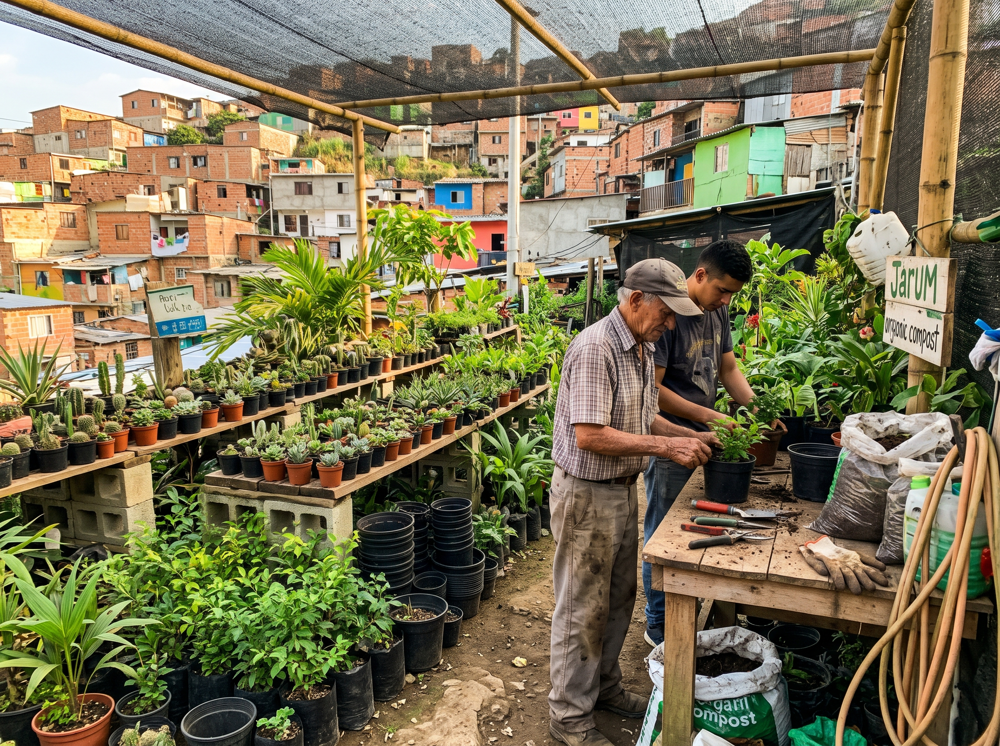
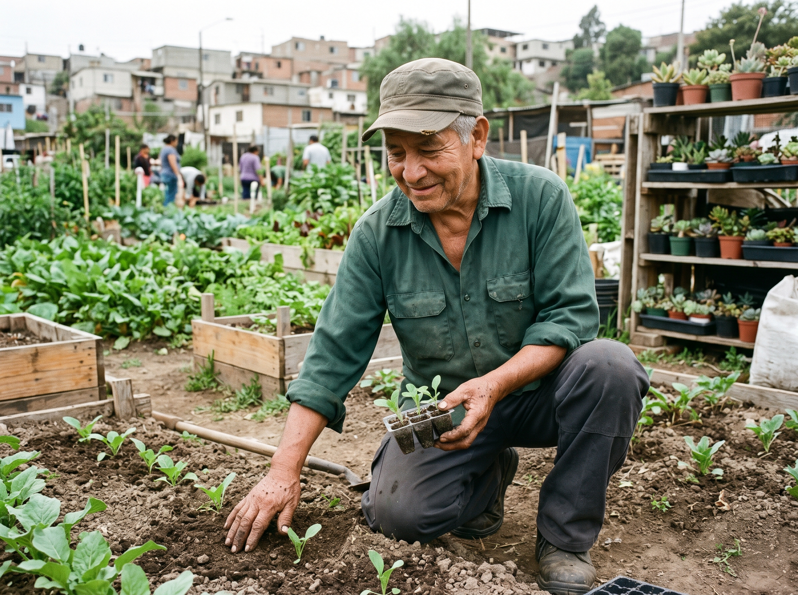

Crónica Territorial
Los jardineros que sembraron vida donde hubo basura[cite: 3]
Subir al Morro de Moravia es caminar sobre una contradicción histórica: bajo la suela hay décadas de desechos de Medellín; a los lados, barquillos, durantas y cintillas se mecen con la brisa del Valle de Aburrá[cite: 3].
Desde la clausura del botadero oficial en 1983, las familias campesinas y los líderes decidieron transformar la herida en un jardín vivo[cite: 3]. En febrero de 2016 formalizaron la corporación JARUM porque sabían que un jardín recién nacido sin jardineros rápidamente se vuelve monte[cite: 3].
"Uno no siembra para ver crecer una planta; siembra para que el barrio crezca."[cite: 3]
— Don William Gómez, Viverista y Socio Fundador de JARUM[cite: 3]
Hoy, muchos de los jardineros están certificados y trabajan de la mano con el Jardín Botánico de Medellín, demostrando que en Moravia la basura nunca fue el final, sino el abono[cite: 3].

Vivero Comunitario JARUM
Propagación de plántulas y sustratos orgánicos para la fitorremediación del morro.

Manos que Siembran Territorio
Cuidado y siembra agroecológica realizada por líderes y fundadores del proceso ambiental.